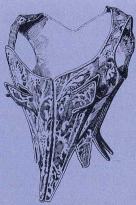

|
Корсеты
для беременных и кормящих матерей
|
||
| Отдельно
выделяются корсеты для беременных и кормящих
женщин. Первые имели непременную шнуровку по бокам, распускаемую по мере развития плода, а также плавный подкрой на живот по центральному переднему шву и уменьшенное количество костей. Беременность в те беспечные времена была не только неприлична, но даже постыдна, поэтому дамы до последнего скрывали свое столь «неловкое» положение, утягивая себя до крайности и пряча «срам» под пышными фижмами, а на последних месяцах беременности попросту отсиживались дома. Корсеты для кормящих матерей имели специальные отлетные клапаны в области груди, которые отстегивались или расшнуровывались при необходимости. Как ни странно, корсеты до сих пор актуальны у будущих мам. Они не только являются модным элементом гардероба, но оказывают поддержку животу и частично снимают нагрузку с позвоночника. |
 |
|
| Коллекция
одежды для будущих мам от SWEET MAMA. 2004 г. |
Коллекция Леоти. Корсет для кормящей матери. Франция. Эпоха Людовика XV. | |
|
Вопросы
для самопроверки
|
||
| 1.
Какие особенности имел корсет для беременных женщин? 2. Какие особенности имел корсет для кормящих матерей? 3. Какие функции имеет современный корсет для беременных женщин? |
||